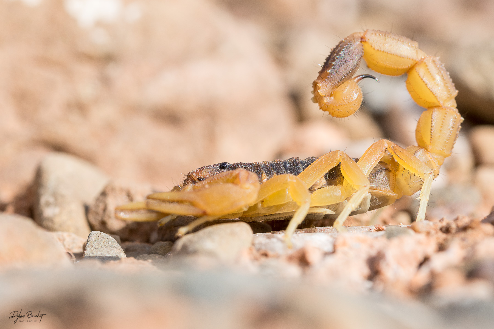

Cette série est pour moi l'occasion de faire connaître des espèces peu connues et souvent craintes, parfois à tort.
Les photos en plan serré permettent au spectateur d'imaginer le point de vue du reptile … ou de sa proie.
Inversement, les plans larges permettent de s'imaginer le monde, l'environnement dans lequel évoluent ces reptiles.
Ici, je joue sur le ressenti du public, j'aime les faire hésiter, naviguer entre d'un côté, la part bestiale, primitive, et effrayante de l'animal, et de l'autre la beauté qui en découle, les couleurs,
les formes et surtout la force de leur regard.
Le but de cette exposition n'est pas forcément de soigner des phobies, mais au moins de faire connaître ces merveilleux animaux, casser les mythes et «raconter» leur vie pour mieux les comprendre et les tolérer.
Pour visualiser toutes les facettes de mon monde photographique, cliquez sur le dard du Scorpion ...
